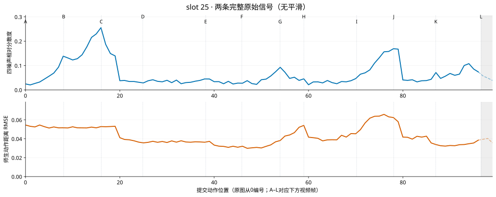
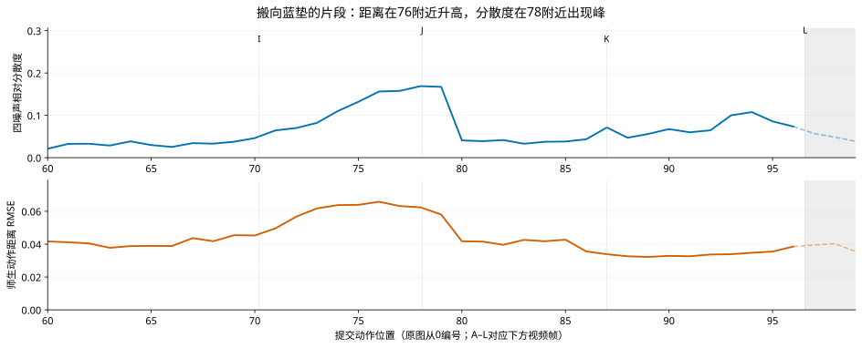
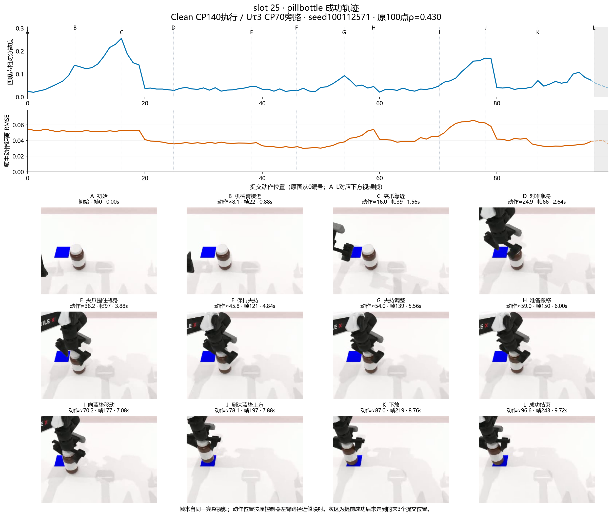

slot 25 · 成功轨迹：两条信号＋12张阶段图
pillbottle · seed100112571 · Clean CP140执行 / Uτ3 CP70旁路 · N10/H50/C20
100个提交动作位置，完整视频244帧、约9.76秒。原100点相关系数0.430；只看末帧前97个位置为0.434。
九种统计图与通俗读法 · 全部12条成功轨迹
完整视频
点下方任意阶段图，跳到对应帧。原视频保留：原始MP4；此处H.264仅为浏览器兼容转码。
全程曲线
蓝：学生重复4次有多不一致。 橙：同一观察下，学生与老师动作相差多少。

最适合放大的是70–80附近：师生距离在76附近升高，分散度在78附近出现峰，视频中瓶子正移向蓝垫。它说明局部有同向变化，不意味着每个峰严格重合。
放大看后半段

两条曲线分别显示原始数值，无平滑。视频是连续物理控制过程，动作—帧沿用已验收的左右臂路径投影；主活动臂为左臂。末帧投影≈96.57，之后3个提交位置未走到，用虚线/灰区表示。
12张阶段图 · 按时间排列
阶段名称根据画面描述；A–L和曲线中的竖线对应。不是一帧等于一个模型动作，精确帧号与视频秒数可直接核对。
整页图稿

Draw.io中的图片、文字、轴和曲线分别可编辑；原曲线和逐帧映射另存，便于重排选图。